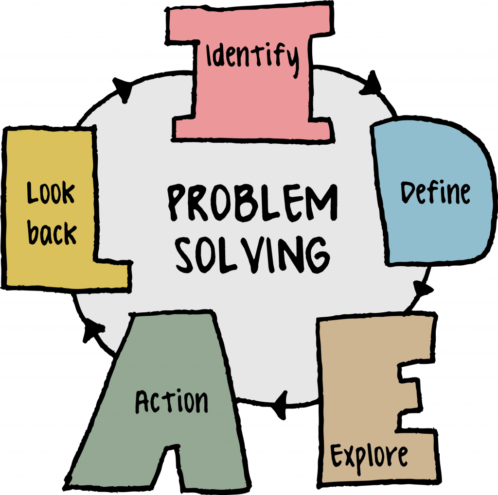

Ways to Prevent
- Access to treatment for mental health, physical health, and substance abuse disorders, including suicide assessment when warranted
- Raise the awareness of every stratum of society to make early detection on teen with suicidal behaviours
- Family and community support, including good communication
- Skills in problem-solving, conflict resolution, and nonviolent ways of handling disputes
- Tools for coping and emotional self-regulation. Having good self-esteem and sense of purpose
- Cultural and/or religious beliefs that discourage suicide and promote healthy living
- The campaign can be organized by the government to raise awareness of the public on the teen mental health issue.



Teen Suicide Prevention: Treatment Approaches
- Attachment-Based Family Therapy(ABFT) is specifically designed to address depression and the risk of teen suicide, by repairing ruptured relationships between parents and teens. As a result, young people feel safe enough to turn to their parents when they are experiencing suicidal thoughts.
- Cognitive Behavioral Therapy (CBT) brings clarity to what a teen is thinking and feeling. CBT identifies the emotions that often result in a sense of isolation. Consequently, it identifies the self-defeating thoughts and assumptions that make life more difficult. CBT provides valuable insight for the depressed teen.
- Dialectical Behavioral Therapy (DBT) provides specific skills like mindfulness and emotional regulation. These skills can be used right away and become stronger with practice.
- Motivational Enhancement Therapy (MET) leads to transformation and healing. This therapy helps teens make positive choices. MET helps resolve any initial resistance to treatment.
- Experiential modalities, such as art therapy and music therapy, give teens ways to process their emotions through self-expression and body-based practices.
- Developing positive coping and relaxation skills for managing stress can help protect teens against suicidal thoughts and suicide attempts.